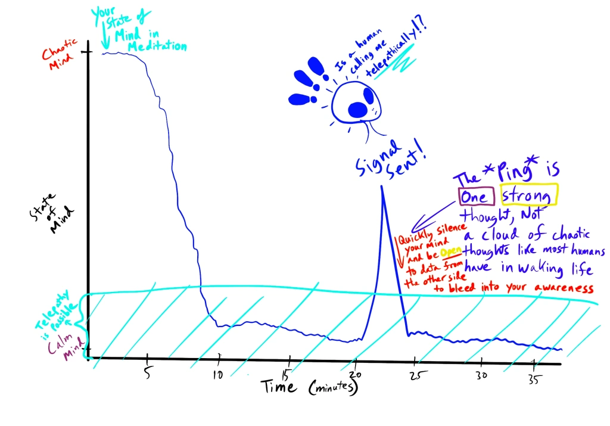

Hey Everyone,
Continuing with the theme of teaching telepathic communication, I’d like to share a simple exercise where you can use a mirror to help alter your perception and induce telepathic communication.
Before I dive in, here’s a quick overview of the process:
That’s it. When done thoroughly, you should establish a solid telepathic connection to ask questions and interact more intuitively.
Earlier, I mentioned that it’s possible to communicate telepathically with plants and animals. I’ve never tried the mirror method for them specifically, but I’m sure it’s possible. Don’t limit yourself only to “proven” techniques—be adventurous, be a scientist! Experiment and make life a beautiful dream.
Step 1: You don’t want a dirty mirror, as smudges can distract you from focusing on your eye. Also, don’t use a mirror that’s too small or one you need to hold in place. You’ll be treating this like a meditation session, so it’ll take a while, and your hands or arms shouldn’t be strained.
Step 2: Pick one eye to stare at, because if you just “stare at yourself” in general, your focus might jump back and forth between eyes. So choose one and stick with it.
Step 3: Treat this like a meditation, because it is meditation. If you’re used to a mantra-based practice, that mantra is the “anchor” of your awareness while thoughts bubble up and drift away. In the mirror method, your eye is the anchor—only it’s visual instead of auditory.
Step 4: Just like other meditation sessions (such as SRV/Remote Viewing), you’ll settle into stillness. Thoughts will come and go; simply let them pass. Over time, you’ll reach longer and longer spans of silence. You might notice your eyes drifting or the environment seeming to “breathe” like a psychedelic experience. Keep focusing on your eye—these visuals are normal and show you’re entering a deep state of relaxation.
Step 5: Use your intention in this still, timeless moment to send out a “ping” into the universe. This means you mentally say someone’s name (or however you identify them) to connect with them across the “psychic internet.” Right after sending that ping, quiet your mind again and stay receptive. Any audio/visual communication that pops up may be data from beyond your own mind, crossing space-time to reach you. It’s akin to typing a URL in a browser and receiving the website back—except now, your mind is the browser.

How are you going to experience another being in the mirror? A helpful approach is to focus on your eye and “set the rule” that the other being will overlay their appearance over your face. This way, your peripheral vision becomes more malleable as time goes on, and incoming frequencies from other points in space-time can bleed through into your awareness.
Fun fact: mirrors have been used for remote viewing for ages. Think of Snow White and the Seven Dwarves: “Mirror, mirror on the wall…” That story features a magical mirror used for “advanced remote viewing.” In the tale, it gave a truthful answer the Queen didn’t like—and the rest was poison-apple history.
Wanna avoid a fate like Snow White? Hone your own psychic abilities, taking control of your destiny here on planet Earth. Believe in yourself! That’s truly all it takes. When in doubt, believe in yourself.
A Word of Caution:
This can feel freaky, and you might still see weird overlays or sense a connection afterward. Don’t let fear stop you! Afraid of meeting a negative entity? Then be clear with your intention—don’t “butt dial” random entities. Reach out to a being you trust or to your Higher Self. You set the rules! This is like calling someone on the phone; you’re not just randomly dialing. If you want to call a “Taygetan,” do it with a confident heart.
If you do want to connect with a random being somewhere, then go for it. Be aware of what you’re doing, but don’t be paralyzed by fear. I’m just tired of living on a planet where people don’t realize they’re psychic. So, learn, practice, learn more, and keep practicing—get your head in the game!
Good luck—and have fun! That’s what this is all about.